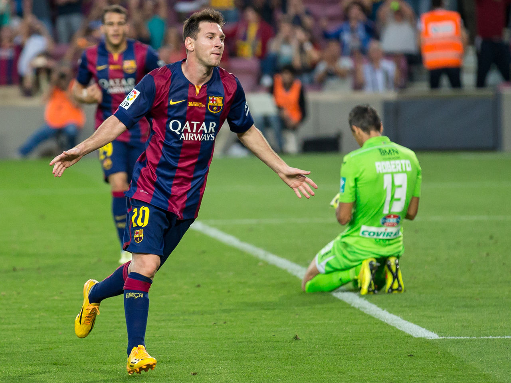
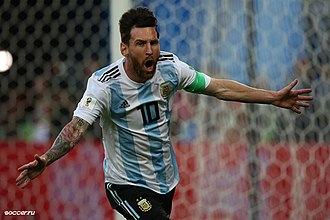

1.2003–05: Rise to the first team
During the 2003–04 season, his fourth with Barcelona, Messi rapidly progressed through the club's ranks,
debuting for a record five teams in a single campaign. After being named player of the tournament in four
international pre-season competitions with the Juveniles B, he played only one official match with the team before being promoted to the Juveniles A, where he scored 18 goals in 11 league games.
2.2012: A record-breaking year
As Messi maintained his goalscoring form into the second half of the season, the year 2012 saw him break several
longstanding records. On 7 March, two weeks after scoring four goals in a league fixture against Valencia, he scored five times in a Champions League last 16-round match against Bayer Leverkusen, an unprecedented achievement in the history of the competition.
:Messi celebrating his second goal against Granada in September 2014
3.2014–15: A historic treble:
Under new manager and former captain Luis Enrique, Messi experienced a largely injury-free start to the 2014–15 season, allowing him to break three more longstanding records towards the end of the year.A hat-trick scored against Sevilla on 22 November made him the all-time top scorer in La Liga, as he surpassed the 59-year record of 251 league goals held by Telmo Zarra.Three days later, he scored another hat-trick against APOEL, overtaking Raúl's 71 goals to become top scorer in the history of the Champions League.
4.2014–15: World Cup and Copa América finals
Messi watches his 25 yard curling strike hit the net against Iran to win the game for Argentina in their second group game at the 2014 FIFA World Cup
Ahead of the World Cup in Brazil, doubts persisted over Messi's form, as he finished an unsuccessful and injury-plagued season with Barcelona. At the start of the tournament, however, he gave strong performances, being elected man of the match in their first four matches. In his first World Cup match as captain, he led them to a 2–1 victory over Bosnia and Herzegovina; he helped create Sead Kolašinac's own goal and scored their second strike after a dribble past three players, his first World Cup goal since his debut in the tournament eight years earlier.During the second match against Iran, he scored an injury-time goal from 25 yards out to end the game in a 1–0 win, securing their qualification for the knockout phase.He scored twice in the last group match, a 3–2 victory over Nigeria, his second goal from a free kick, as they finished first in their group.
5.2018: World Cup
Following on from their poor qualification campaign, salvaged by Messi, expectations were not high going into the 2018 World Cup, with the team, without an injured Messi, losing 6–1 to Spain in March 2018.Prior to Argentina's opener, there was speculation in the media over whether this would be Messi's final World Cup.In the team's opening group match against Iceland on 16 June, Messi missed a potential match-winning penalty in an eventual 1–1 draw. In Argentina’s second game of the 2018 World Cup on 21 June, the team lost 3–0 to Croatia. Post match the Argentina coach Jorge Sampaoli spoke of the lack of quality in the team surrounding Messi, “the reality of the Argentina squad clouds his [Messi’s] brilliance". Messi had just 49 touches of the ball and only two inside the Croatia penalty area.Sampaoli stated, “we quite simply couldn't pass to him to help him generate the situations he is used to. We worked to give him the ball but the opponent also worked hard to prevent him from getting the ball. We lost that battle.”Croatia midfielder Luka Modrić also stated post match, “Messi is an incredible player but he can't do everything alone.”

:Messi celebrating a goal against Nigeria at the 2018 FIFA World Cup
In Argentina's final group match against Nigeria at the Krestovsky Stadium, Saint Petersburg on 26 June, Messi scored the opening goal in an eventual 2–1 victory, becoming the third Argentine after Diego Maradona and Gabriel Batistuta to score in three different World Cups; he also became the first player to score in the World Cup in his teens, twenties, and his thirties
6.2019: Copa América
On 21 May 2019, Messi was included in Lionel Scaloni's final 23-man Argentina squad for the 2019 Copa América. In Argentina's second group match of the tournament on 19 June, Messi scored the equalising goal from the penalty spot in a 1–1 draw against Paraguay. Following Argentina's 2–0 defeat to hosts Brazil in the semi-finals on 2 July, Messi was critical of the refereeing during the match, commenting: "They were not better than us. They found the net early and the secon07] In the third-place match against Chile on 6 July, Messi set-up Agüero's opening goal from a free kick in an eventual 2–1 win, to help Argentina capture the bronze medal